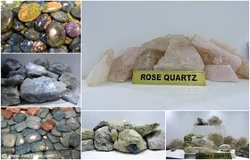
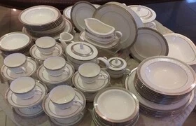
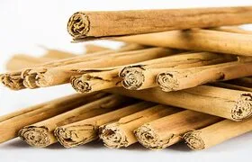
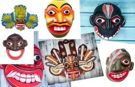

Types of Donations can make for the betterment of the tea Industry in Sri Lanka
Sri Lankan Other Best Merchandises
Gems & Jewelry

Sri Lanka, the island known as the pearl of the Indian Ocean lives up to its nickname as a land rich with a variety of gems. Sri Lanka is home to 40 varieties of Gems out of 85 varieties available in the whole world.
Place Can Buy
Porcelain Tableware

A range of body shapes and decoration techniques in tableware gives Sri Lanka a great versatility as a country which can deliver high quality elegant contemporary and traditional designs to the world.
All Sri Lankan products conform to Food and drug Administration (FDA) norms and ASTM Standards.
Place Can Buy
Cinnamon

A world-renowned spice or condiment, there are at least four main types of cinnamon, but the two most well-known are: Cinnamomum cassia originating in China and Cinnamomum verum (also known as the old botanical name Cinnamomum Zeylanicum) the cinnamon originating in Sri Lanka (Ceylon).
Place Can Buy
Traditional Wooden Masks

Masks making is a tradition in Sri Lanka and the finished masks are used in festivals, to decorate the houses and for dance performances. The Traditional mask is hand carved by an edura, or exorcist, out of local wood and polished using certain plant leaves.
Place Can Buy